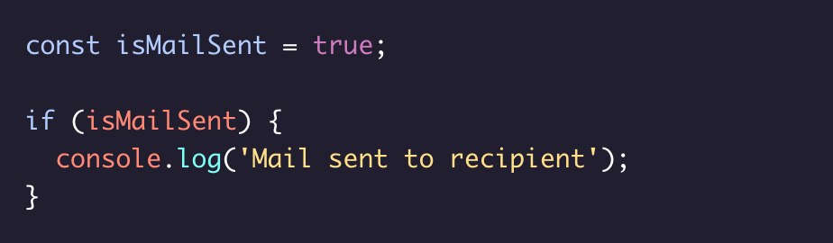

Control Flow
Control flow is the order in which statements are executed in a program. The default control flow is for statements to be read and executed in order from left-to-right, top-to-bottom in a program file. Control structures such as conditionals (if statements and the like) alter control flow by only executing blocks of code if certain conditions are met. These structures essentially allow a program to make decisions about which code is executed as the program runs.
Logical Operator ||
The logical OR operator || checks two values and returns a boolean. If one or both values are truthy, it returns true. If both values are falsy, it returns false.
Ternary Operator
The ternary operator allows for a compact syntax in the case of binary (choosing between two choices) decisions. It accepts a condition followed by a ? operator, and then two expressions separated by a :. If the condition evaluates to truthy, the first expression is executed, otherwise, the second expression is executed.
else Statement
An else block can be added to an if block or series of if-else if blocks. The else block will be executed only if the if condition fails.
Logical Operator &&
The logical AND operator && checks two values and returns a boolean. If both values are truthy, then it returns true. If one, or both, of the values is falsy, then it returns false.
switch Statement
The switch statements provide a means of checking an expression against multiple case clauses. If a case matches, the code inside that clause is executed. The case clause should finish with a break keyword. If no case matches but a default clause is included, the code inside default will be executed. Note: If break is omitted from the block of a case, the switch statement will continue to check against case values until a break is encountered or the flow is broken.
if Statement
An if statement accepts an expression with a set of parentheses: - If the expression evaluates to a truthy value, then the code within its code body executes. - If the expression evaluates to a falsy value, its code body will not execute.
Comparison Operators
Comparison operators are used to comparing two values and return true or false depending on the validity of the comparison: === strict equal, !== strict not equal, > greater than, >= greater than or equal, < less than, <= less than or equal
Logical Operator !
The logical NOT operator ! can be used to do one of the following: - Invert a Boolean value., - Invert the truthiness of non-Boolean values.
else if Clause
After an initial if block, else if blocks can each check an additional condition. An optional else block can be added after the else if block(s) to run by default if none of the conditionals evaluated to truthy.
Truthy and Falsy
In JavaScript, values evaluate to true or false when evaluated as Booleans. - Values that evaluate to true are known as truthy., - Values that evaluate to false are known as falsy. Falsy values include false, 0, empty strings, null undefined, and NaN. All other values are truthy.